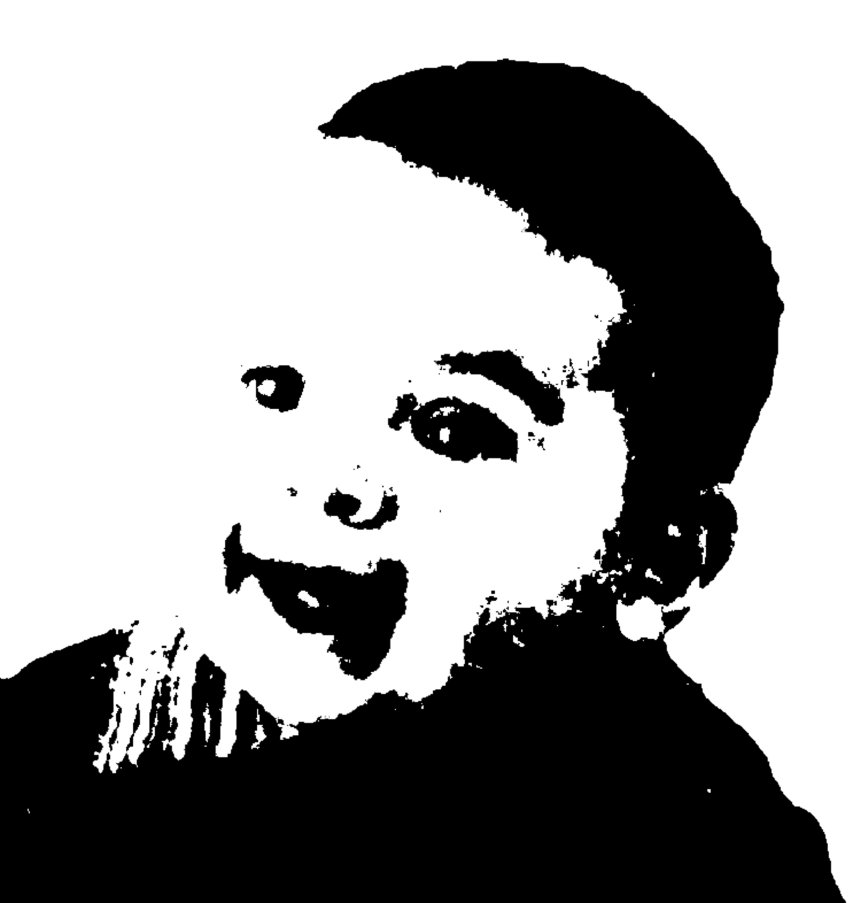
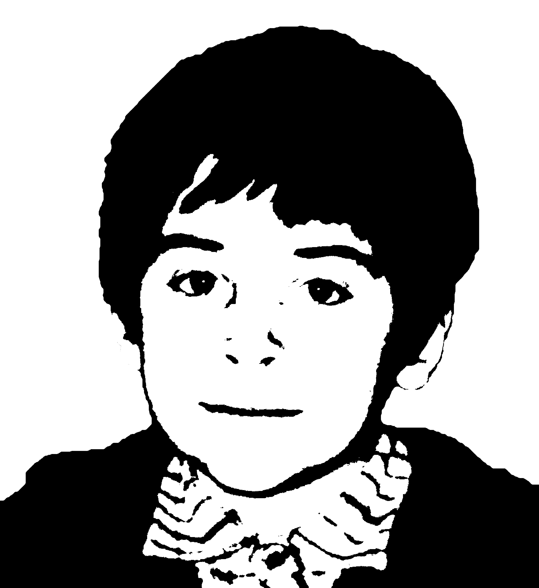
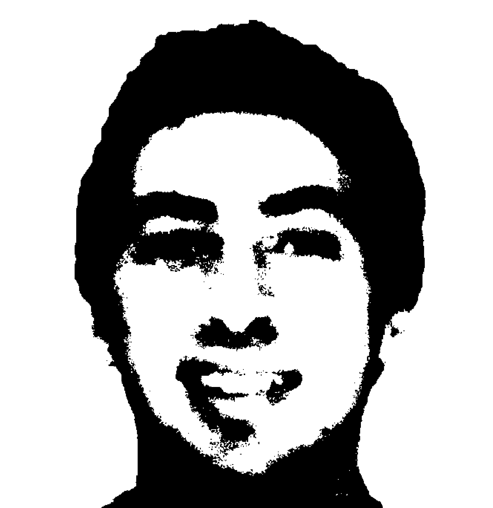
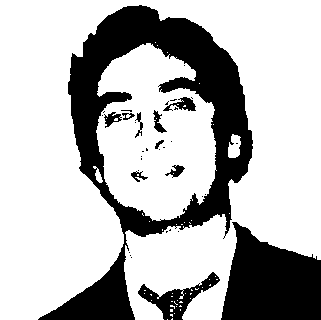
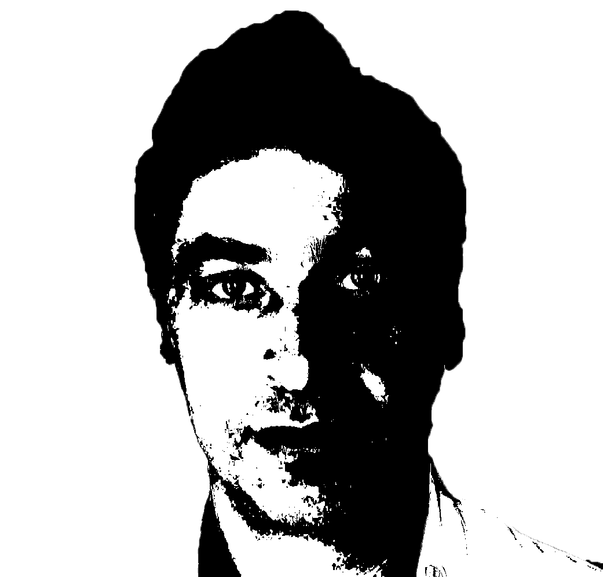
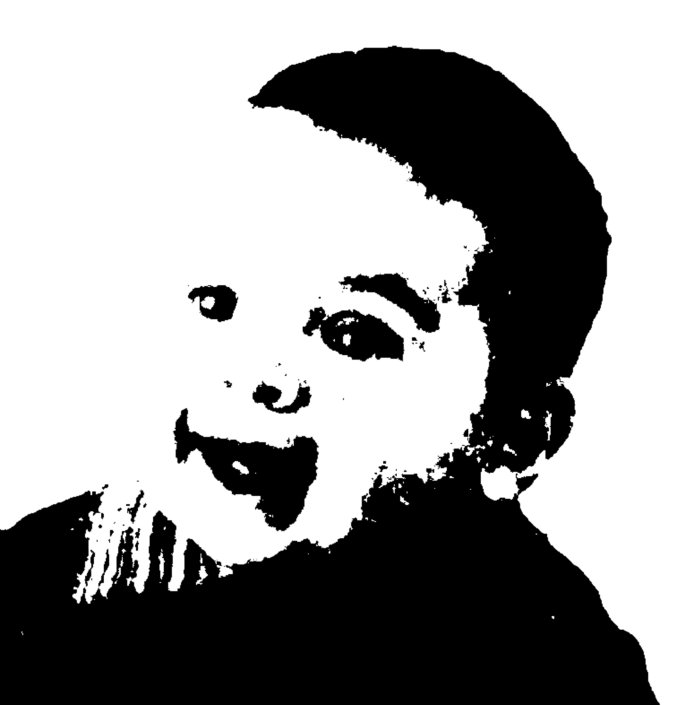
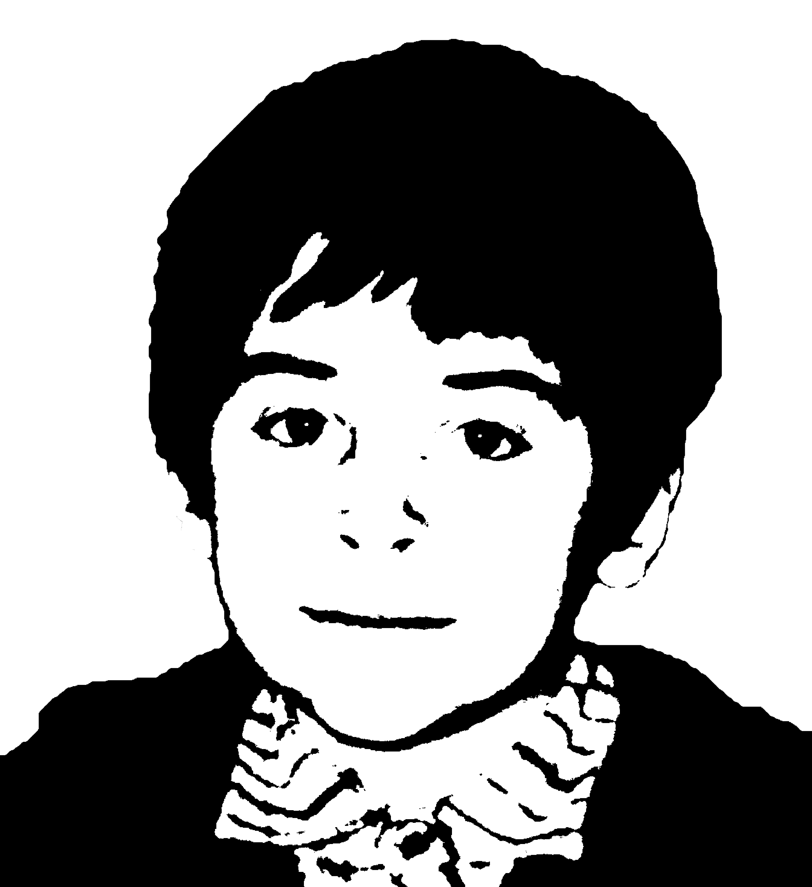
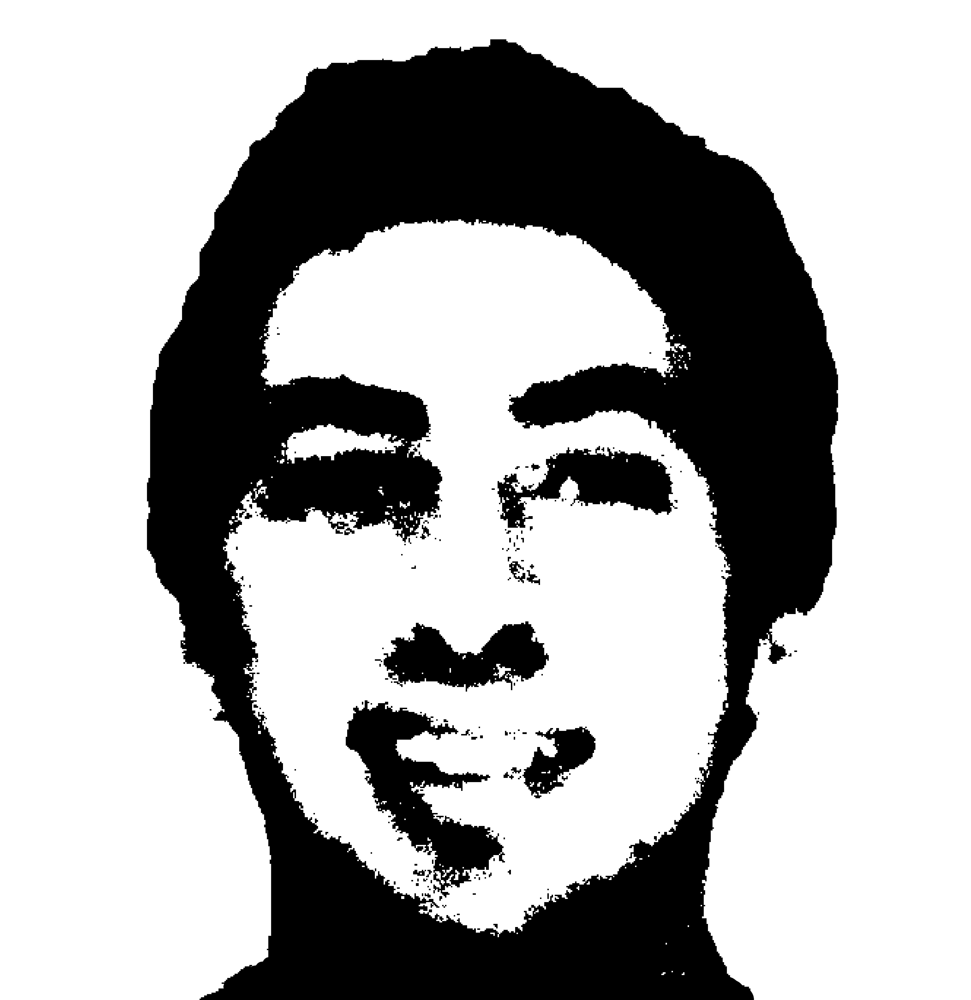
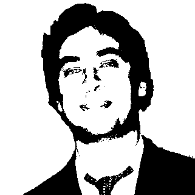
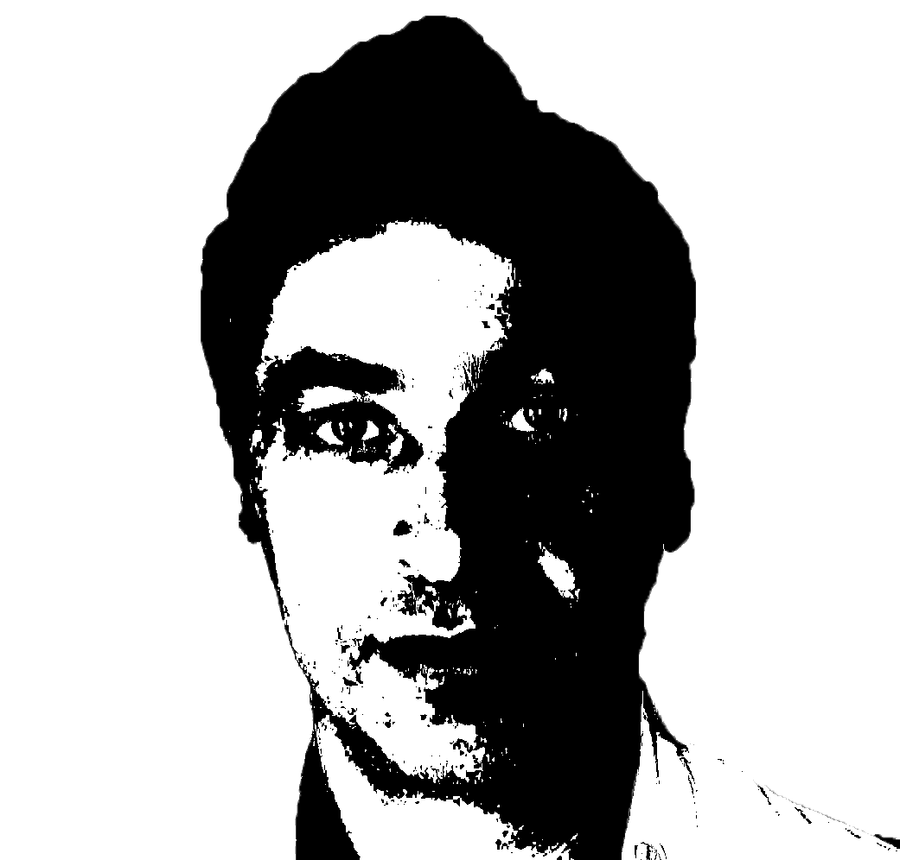

Sou formado em Administração, há quase 20 anos, pelo ISCTE - UAL, em Lisboa, tendo feito uma especialização em Marketing e Negócios Internacionais

Nasci no dia 20 de dezembro de 1975 na região oeste de Portugal, e fui criado numa pequena e pacata localidade situada a 50 quilómetros de Lisboa, chamada de Olhalvo, onde tive uma infância muito feliz e extremamente desregrada, típica de um rapaz do campo. Em contraste com os dias de hoje, a minha mãe nem sabia por onde eu andava, e nem precisava se preocupar, só precisava de voltar a casa para as refeições. Se me atrasasse para alguma, aí sim, era motivo de preocupação. Fiz o ensino médio na cidade de Torres Vedras, na mesma região da minha aldeia. Sim, em Portugal chamamos de aldeia às vilas ou cidades pequenas e a minha só tem 2.500 habitantes. Quando chegou a hora de escolher o curso do Ensio Superior, já nem me lembro porque escolhi Administração... Mas na época parecia-me a escolha acertada e deixem-me dizer que se Olhalvo era um lugar bom para criança, já não posso dizer o mesmo para adolescentes, pelo menos no meu tempo, e eu queria mesmo era ir para a cidade grande... Lisboa.

E consegui mesmo ir para a grande cidade aos 17 anos! Digamos que fiquei um pouco deslumbrado com toda a agitação de um capital com Lisboa e assim os primeiros semestres da graduação foram um pouco complicados, mas depois de deu tudo certo e consegui tornar-me administrador em uma das instituições de ensino mais reputadas na área em Portugal. Continuava sem saber ao certo porque Administração, mas dentro desta ampla graduação, pelo menos já tinha descoberta uma área que me agradava mais: o Marketing. Depois de concluída a graduação nem demorou muito a arranjar emprego e comecei a trabalhar em uma multinacional, a Mitsubishi Motors, que por acaso até era perto de Olhalvo, pelo que voltei a morar a tempo inteiro com os meu pais, pois era bom para poupar dinheiro e mesmo assim eu conseguia manter a minha autonomia. Entrei na Mitsubishi como estagiário e progredi até maiores responsabilidades na área que gostava, o Marketing, com o adicional benefício de trabalhar com o automóveis, produto que eu gostava bastante.

Bem ia eu curtindo a minha vida de solteiro, com alguns namoros pelo meio, quando em 2003 eu e mais 4 amigos, ex-colegas de faculdade, decidimos vir conhecer essa cidade que muita gente falava dos seus encantos, principalmente o clima, as praias e vida noturna, Fortaleza. Digamos que foi uma viagem qeu mudou verdadeiramente a minha vida, pois foi nessa ocasião que conhecia aquela que é a minha mulher e mãe dos meus 2 filhos. Já tinha vindo várias vezes ao Brasil, mas nunca tinha tido um verdadeiro motivo para pensar em morar aqui, mas sendo cafona mesmo, quando conheci o Amor da minha vida e ainda mais queria experimentar morar em outro país e em outra cultura, comecei então a planejar a minha mudança para os trópicos e fugir definitivamente dos Invernos, pelo que em Março de 2014 mudei-me de mala e cuia para Fortaleza e pouco tempo depois casei-me com a Danielle, a sereia que me encantou para cá (nóis é brega, mais é feliz).